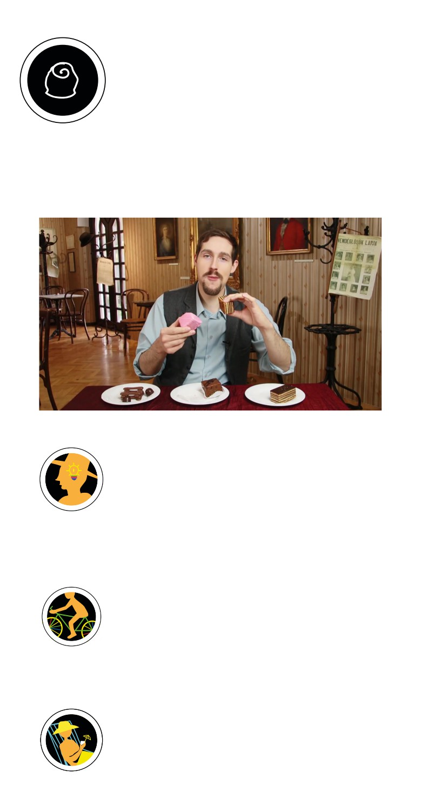

AMIVEL A NÉPET ETETIK
Üdvözlünk a tanműhelyben! Itt tanítják a mesterek követ-
kező generációit a régi fogásokra, és az újabb édességdi-
vatokra, hogy sikeres maradjon a cég. Kattints a videóra,
hogy megismerd a siker legősibb szabályát!
Ha esetleg nem tudod, miről van szó, nézd meg bevezető videónkat és
a letölthető tanári segédletet, melyeket itt (kezdő oldal vagy videó linkje)
találsz.
Youtube
HASZNÁLD A FEJED!
Tervezzetek választékot! Nézzétek át az alább felsorolt há-
rom cukrászda típust, és állítsatok össze mindegyikhez olyan
süteménykínálatot, ami a vásárlók igényeit kielégítheti! Leg-
alább kétféle süteményt, egy édes és egy sós aprósüteményt válogassatok
össze. Meg tudjátok indokolni, miért pont ezeket választottátok?
PATTANJ FEL!
Milyen különleges fagyikat ismertek? Használjátok a fan-
táziátokat, és tervezzetek fagylaltot “Madame Gerbeaud”
névvel! Milyen összetevőkből állna? Milyen íz dominálna?
Mit tükrözne Gerbeaud asszonyról (feleség, anyuka, vezető, kedves, szigo-
rú, stb.)? Hol árulnátok?
EGY KIS LAZÍTÁS…